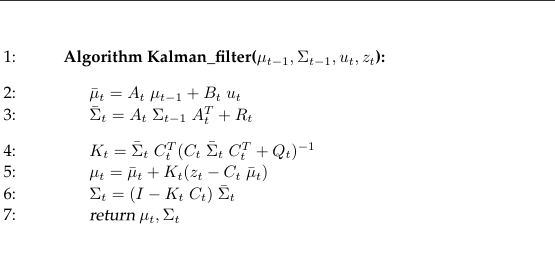

The Kalman Filter is a direct descendant of the Bayes Filter. It is the first practical implementation of BF. It uses uni- and multivariate Gaussians of linear functions to describe the posterior belief of the robot, and does it in time polynomial to the measurement and state matrices dimensions. It still has a number of limitations. First, it only works on unimodal Gaussian distributions. This implies that the robot can only have a single mean of potential state with an uncertainty range. This type of algorithm can be used for localization with known map and initial position, but crumbles as soon as the robot is missing either or the state transition probability and measurement probability are non-linear.
